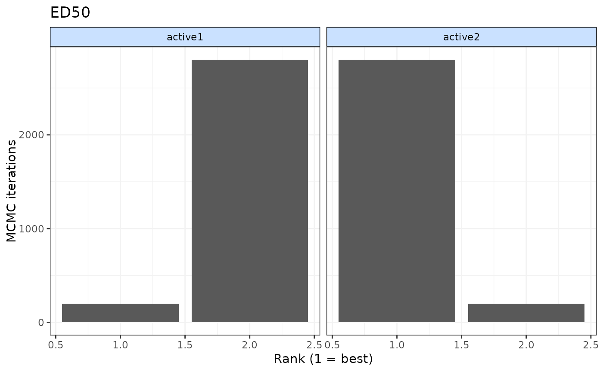

rank.mbnma.RdOnly parameters that vary by agent/class can be ranked.
# S3 method for mbnma
rank(
x,
params = NULL,
lower_better = TRUE,
level = "agent",
to.rank = NULL,
...
)An object on which to apply the rank method
A character vector of named parameters in the model that vary by either agent
or class (depending on the value assigned to level). If left as NULL (the default), then
ranking will be calculated for all available parameters that vary by agent/class.
Indicates whether negative responses are better (TRUE) or positive responses are better (FALSE)
Can be set to "agent" to rank across different agents or "class" to rank
across different classes.
A numeric vector containing the codes for the agents/classes you wish to rank.
If left NULL then all agents/classes (depending on the value assigned to level) in
the model will be ranked. Included codes must be greater than
2 if placebo has been modelled, since placebo cannot be included in the ranking
Arguments to be passed to methods
An object of class("mbnma.rank") which is a list containing a summary data
frame, a matrix of rankings for each MCMC iteration, a matrix of probabilities
that each agent has a particular rank, and a matrix of cumulative ranking probabilities
for each agent, for each parameter that has been ranked.
Ranking cannot currently be performed on non-parametric dose-response MBNMA
# \donttest{
# Using the triptans data
network <- mbnma.network(triptans)
#> Values for `agent` with dose = 0 have been recoded to `Placebo`
#> agent is being recoded to enforce sequential numbering and allow inclusion of `Placebo`
# Rank selected agents from a log-linear dose-response MBNMA
loglin <- mbnma.run(network, fun=dloglin())
#> `likelihood` not given by user - set to `binomial` based on data provided
#> `link` not given by user - set to `logit` based on assigned value for `likelihood`
#> Compiling model graph
#> Resolving undeclared variables
#> Allocating nodes
#> Graph information:
#> Observed stochastic nodes: 182
#> Unobserved stochastic nodes: 77
#> Total graph size: 3644
#>
#> Initializing model
#>
ranks <- rank(loglin, to.rank=c("zolmitriptan", "eletriptan", "sumatriptan"))
summary(ranks)
#> $rate
#> rank.param mean sd 2.5% 25% 50% 75% 97.5%
#> 1 zolmitriptan 2.008333 0.09092109 2 2 2 2 2
#> 2 eletriptan 1.000000 0.00000000 1 1 1 1 1
#> 3 sumatriptan 2.991667 0.09092109 3 3 3 3 3
#>
# Rank only ED50 parameters from an Emax dose-response MBNMA
emax <- mbnma.run(network, fun=demax(), method="random")
#> 'ed50' parameters are on exponential scale to ensure they take positive values on the natural scale
#> `likelihood` not given by user - set to `binomial` based on data provided
#> `link` not given by user - set to `logit` based on assigned value for `likelihood`
#> Compiling model graph
#> Resolving undeclared variables
#> Allocating nodes
#> Graph information:
#> Observed stochastic nodes: 182
#> Unobserved stochastic nodes: 197
#> Total graph size: 4121
#>
#> Initializing model
#>
ranks <- rank(emax, params="ed50")
summary(ranks)
#> $ed50
#> rank.param mean sd 2.5% 25% 50% 75% 97.5%
#> 1 eletriptan 4.370333 1.281302 2 3 4 5 6
#> 2 sumatriptan 4.406667 1.307616 2 3 4 5 7
#> 3 frovatriptan 6.079333 1.477532 2 6 7 7 7
#> 4 almotriptan 3.286333 1.890733 1 2 3 5 7
#> 5 zolmitriptan 4.471333 1.690798 2 3 4 6 7
#> 6 naratriptan 2.404333 2.259030 1 1 1 4 7
#> 7 rizatriptan 2.981667 1.412089 1 2 3 4 6
#>
#### Ranking by class ####
# Generate some classes for the data
class.df <- triptans
class.df$class <- ifelse(class.df$agent=="placebo", "placebo", "active1")
class.df$class <- ifelse(class.df$agent=="eletriptan", "active2", class.df$class)
netclass <- mbnma.network(class.df)
#> Values for `agent` with dose = 0 have been recoded to `Placebo`
#> agent is being recoded to enforce sequential numbering and allow inclusion of `Placebo`
#> Values for `class` with dose = 0 have been recoded to `Placebo`
#> class is being recoded to enforce sequential numbering and allow inclusion of `Placebo`
emax <- mbnma.run(netclass, fun=demax(), method="random",
class.effect=list("ed50"="common"))
#> 'ed50' parameters are on exponential scale to ensure they take positive values on the natural scale
#> `likelihood` not given by user - set to `binomial` based on data provided
#> `link` not given by user - set to `logit` based on assigned value for `likelihood`
#> Compiling model graph
#> Resolving undeclared variables
#> Allocating nodes
#> Graph information:
#> Observed stochastic nodes: 182
#> Unobserved stochastic nodes: 192
#> Total graph size: 4109
#>
#> Initializing model
#>
# Rank by class, with negative responses being worse
ranks <- rank(emax, level="class", lower_better=FALSE)
print(ranks)
#>
#> ================================
#> Ranking of dose-response MBNMA
#> ================================
#>
#> Includes ranking of class effects from dose-response MBNMA:
#> ED50
#>
#> 2 agents/classes/predictions ranked with positive responses being `better`
#>
#> ED50 ranking (from best to worst)
#>
#> |Treatment | Mean| Median| 2.5%| 97.5%|
#> |:---------|----:|------:|----:|-----:|
#> |active2 | 1.14| 1| 1| 2|
#> |active1 | 1.86| 2| 1| 2|
#>
#>
# Print and generate summary data frame for `mbnma.rank` object
summary(ranks)
#> $ED50
#> rank.param mean sd 2.5% 25% 50% 75% 97.5%
#> 1 active1 1.861667 0.3453071 1 2 2 2 2
#> 2 active2 1.138333 0.3453071 1 1 1 1 2
#>
print(ranks)
#>
#> ================================
#> Ranking of dose-response MBNMA
#> ================================
#>
#> Includes ranking of class effects from dose-response MBNMA:
#> ED50
#>
#> 2 agents/classes/predictions ranked with positive responses being `better`
#>
#> ED50 ranking (from best to worst)
#>
#> |Treatment | Mean| Median| 2.5%| 97.5%|
#> |:---------|----:|------:|----:|-----:|
#> |active2 | 1.14| 1| 1| 2|
#> |active1 | 1.86| 2| 1| 2|
#>
#>
# Plot `mbnma.rank` object
plot(ranks)

# }